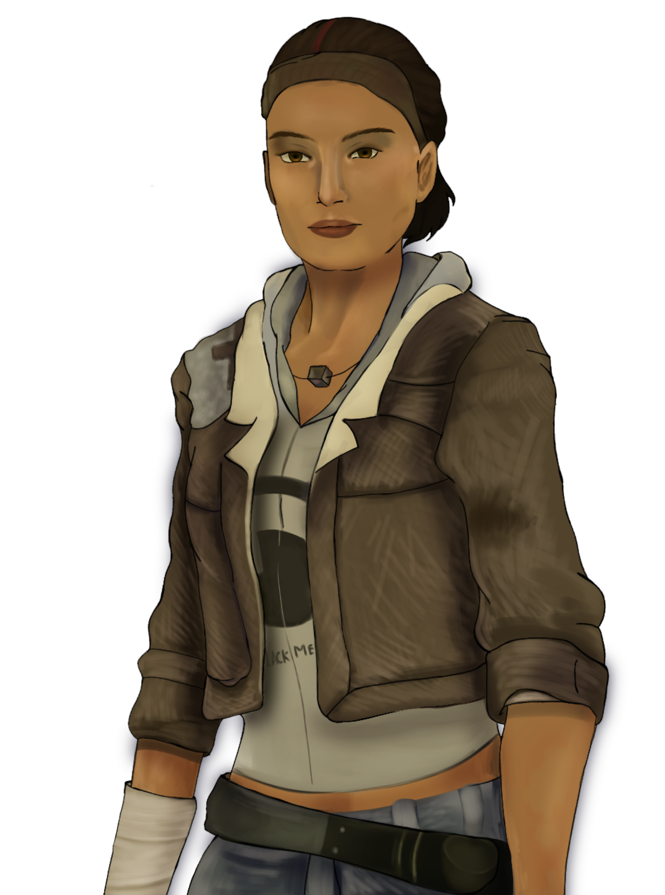
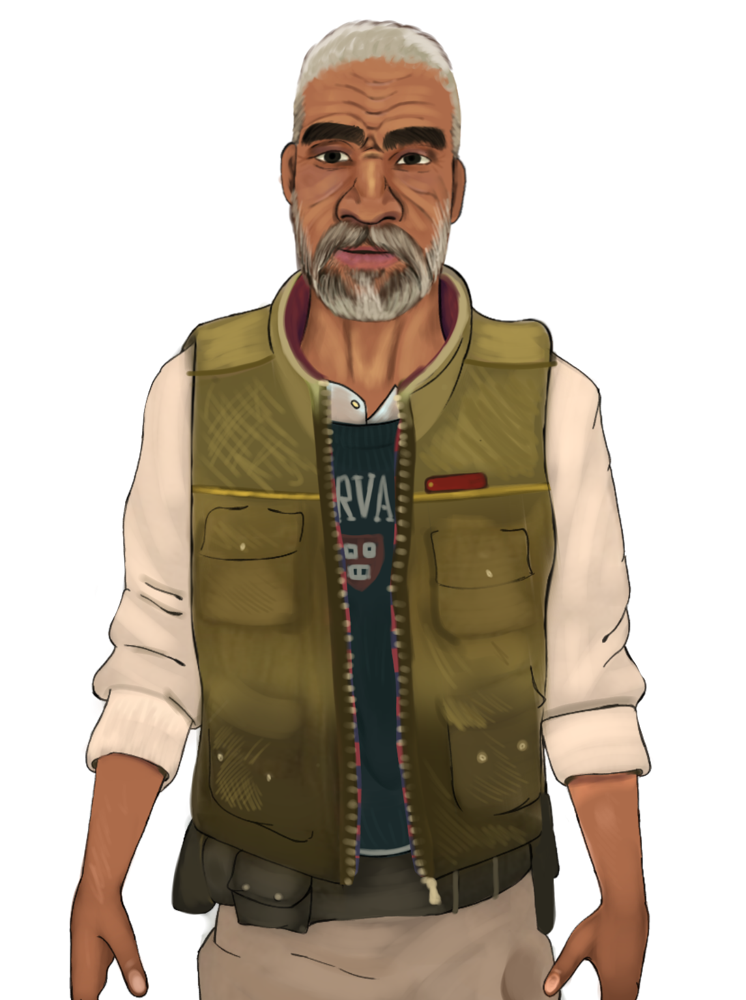
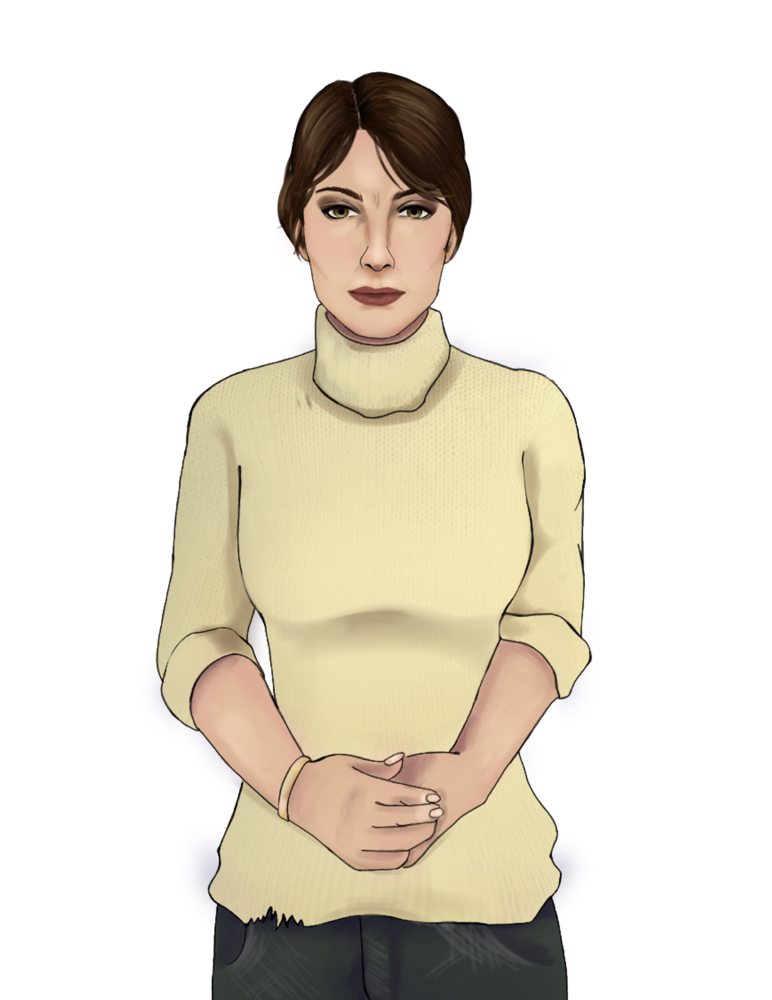
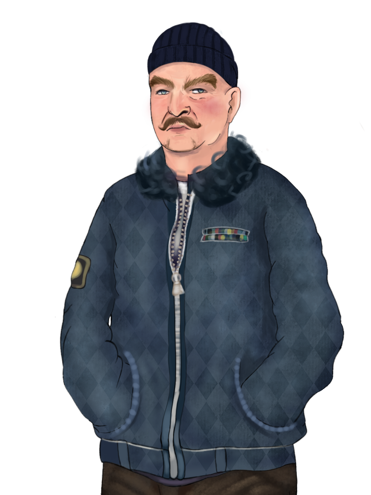
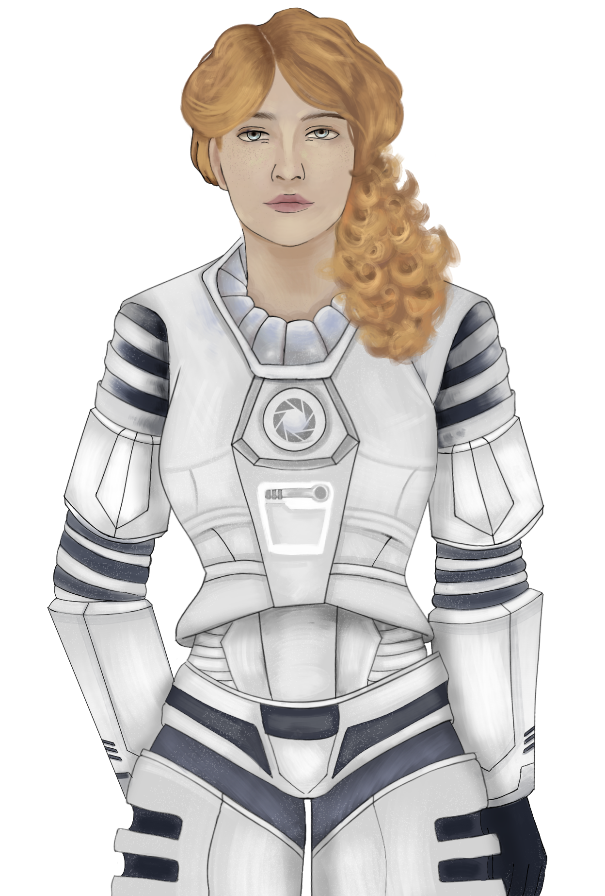

Персонажи
В игре представлены разные персонажи из оригинальной игры Half-Life 2:
- Гордон Фримен - на данный момент имеет статус главного героя и не имеет спрайта как у остальных персонажей.
- Аликс Вэнс
- Илай Вэнс
- Джудит Моссман
- Отец Григорий

- Одесса Кэббедж
Это не все персонажи из игр Half-Life, кого мы планировали добавить.
Помимо них в игре присутствуют оригинальные персонажи:
- Альма Джонсон